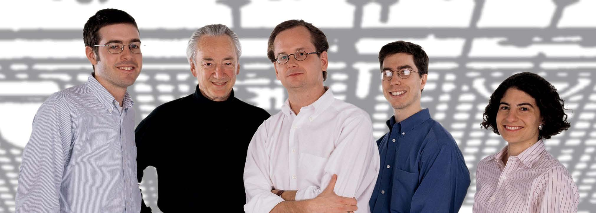

Don’t select f
The Berkman
ellows. Select
a community
Center for
Internet & Society
at Harv
at Harvar ard Univ
d University ersity
. Cultivate
the culture. Aim for a
cohesive div
Fifteen L ersity
essons
. Transfer
the knowledg
from the e. Provide
just enough structur
Berkman Fellows e.
Get bodies in a r
Programoom.
Let the sociality emerge.
Encourage interest groups.
Stand for something. Build
stuff. Partner up. Hire
a remarkable staff. Be
Harvard. Acknowledge your
issues. Learn from your
lessons.
Part I: Foundations
How the Fellows Program works
10
What constitutes success for the Fellows Program: the Center’s view 12
What constitutes success for the Fellows Program: the fellows’ view 14
Part II: Lessons Learned
01 Don’t select fellows. Select a community.
16
02 Cultivate the culture
16
03 Transfer the knowledge
17
04 Aim for a cohesive diversity 19
05 Provide just enough structure
20
06 Get bodies in a room 21
07 Let the sociality emerge
22
08 Encourage interest groups 23
09 Stand for something
24
10 Build stuff
24
11 Partner up
26
12 Hire a remarkable staff
26
13 Be Harvard
27
14 Acknowledge your issues
28
15 Learn from your lessons
30
Appendices
32
2015 All content under a CC-BY License
Design and Layout: Daniel Dennis Jones
A good day to be a Berkman Fellow
On any particular Tuesday morning in the spring semester of 2015, in the Victorian
house the Berkman Center shares with a handful of other Harvard organizations, you
would have been likely to find Berkman Fellows hanging out in one of the rather small
public areas, laptops open and earbuds plugged in, or talking with other fellows in the
kitchen or lounge area. Others might be working at home, attending a class or event at
the University, or enjoying Cambridge — especially if the Tuesday was after this winter’s
epic high tide of snow had ebbed.
At noon the fellows gather for the Tuesday talk, usually featuring a guest or a fellow.
The attendees from the Center and the community routinely overflow into the Center’s
small lounge. Attendees try to finish the lunch the Center provides before the speaker
throws the session open for discussion.
At two o’clock, the fellows assemble for the only regularly scheduled time for all of them
to be alone together. The format varies, and the discussions are usually spirited.
At four, the fellows drift into smaller informal groups. Some go back to their individual
work or to the collaborative projects at the center of their fellowships. It’s quite possible
that an email has been sent to their mailing list inviting any and all to assemble for a
meal at a local restaurant or, increasingly commonly, at the one of fellows’ homes where
a meal will be prepared, usually collaboratively.
At the end of the day, the fellows will have worked at their own paces, had lively conver-
sations with colleagues, been stimulated by a talk from an expert likely out of their own
field, engaged in cross-disciplinary discussions in a group of the whole, discovered a
new shop or pub in Harvard Square, deepened social bonds at an informal dinner, and
been stretched in purposeful and serendipitous ways.
4
Fifteen Lessons from the Berkman Fellows Program
Aims and plan of this report
This report was funded by the Ford Foundation, long a supporter of Berkman Center
programs and events, to explore what makes the Berkman Fellows program successful.
The aim is to derive lessons that can be applied to other institutions.
We approached writing this report as a journalistic task, interviewing a cross-section of
fellows, faculty, and staff, including during a group session at a Berkman Fellows Hour.
From these interviews a remarkably consistent set of themes emerged.
The Fellows program has evolved over time. We focused on the current state of the
program in this report, using past experiences only to illuminate success factors and
opportunities for growth.
It was written by David Weinberger—a former fellow (2004-2009) and current senior
researcher at the Center, and member of its Fellows Advisory Board—with the active
collaboration of Berkman staff, fellows, and faculty.
Fifteen Lessons from the Berkman Fellows Program
5
Part I:
Foundations
was best known as a lyricist for
the Grateful Dead. But to the
“It got started
world of the Web, he was known
as a visionary and activist for an
open Internet. “John just lit me
around this table,” up,” says Prof. Nesson, with “a
piece he wrote about copyright
recalls Prof. Charles Nesson,
In 1995, the Center got seed
breaking out of its bottle….It
sitting on the porch of his house
money from the Provost and
was about the balance between
in Cambridge, Massachusetts.
a private donor. “Then we got
the forces of openness and of
“Around the table were Fern—my
the gift from Myles,” in 1997,
closedness in a rhetorical envi-
partner and spouse—and Myles
marking the official creation of
ronment.” Prof. Nesson reflects
Berkman, and me. Myles agreed
the Center, with Prof. Jonathan
for a moment. “I could see that we
it would be a wonderful thing
Zittrain as a co-founder (Prof.
shared a vision.”
to have a center to explore and
Zittrain is now Faculty Chair
expand the Internet and society…
of the Center, following a long
And that was it.”
tenure by Prof. William “Terry”
Fisher.)
It was 1995, back
when Yahoo was a
The Fellows Program was part of
hand-curated listing
the original design. “Totally key,”
of sites, and it was
says Prof. Nesson. In fact, the
still unusual to see a
program was a central reason
business advertise
for administratively forming as a
its Web address. But
center, as Prof. Zittrain explains:
to Prof. Nesson and
“From the very beginning there
John Perry Barlow, the inaugural Berkman fellow
(photo: Joi Ito, 2007)
that small, original
were people we wanted to work
Berkman cohort “it
with who would not fit the param-
Barlow’s activism deeply ap-
seemed obvious that
eters of a traditional appointment. pealed to Prof. Nesson. “It was
Berkman Center founder Charles Nesson
(photo: arcticpenguin, 2009)
we were moving into
That at the university level is what clear that what we were talking
a different environ-
a fellowship is able to do.” Or, as
about did not exist yet,” and thus
ment in which We the People
Prof. Nesson puts it, “It effec-
needed willing hands as well as
could connect.”
tively gave the Faculty Director
inquisitive minds. “The academic
the power to say to anyone, ‘I
idea of sitting back and observing
The Berkman Center for Internet
dub thee a fellow of the Berkman
was inadequate to it.”
& Society began as a seminar.
Center.’”
“People who knew something
That presented a challenge that
talked together, totally informal-
The first fellow so dubbed was an
the Center is still cognizant of:
ly,” recalls Prof. Nesson. That
unusual choice for an academ-
balancing the open-mindedness
first cohort included Jonathan
ic research center: John Perry
of a scholarly research center
Zittrain and Lawrence Lessig
Barlow. A Wyoming cattle rancher with the activist’s willingness to
(now the Roy L. Furman Professor and poet, to the wide world he
commit to a position – “scholar-
of Law at Harvard Law School),
ship with impact,” as the Center’s
soon joined by the likes of Wendy
mission statement puts it. “Com-
Seltzer (now at the W3C), Chris
plete openness means you live in
Kelly (formerly Facebook’s Chief
a desert,” says Prof. Nesson, “and
Privacy Officer, now an investor),
complete closedness means you
and Alexander MacGillivray (now
live in a cave.”
Deputy US CTO).
Berkman Center co-founder Jonathan Zittrain
(photo: arcticpenguin, 2008)
Fifteen Lessons from the Berkman Fellows Program
7

Members of the first Berkman Center cohort (from L to R): Alexander MacGillivray, Charles Nesson, Lawrence Lessig, Jonathan Zittrain, Wendy Seltzer
(photo: Farnsworth/Blalock Photography)
With the initial fellows, and
activist, software developer, and
people wanting to make a mark,
especially under the influence of
law professor, and is still involved
participate in our activities, and
Jonathan Zittrain, the Center at
with the Chilling Effects (Lumen)
accelerate their careers.” Wendy
first focused primarily on projects project that she was instrumental
Seltzer, who started at the Center
that required writing software
in creating during her years as
in 1997, adds that the informal
to gather research. “Originally it
a fellow. Andrew Shapiro wrote
goal was “to find ways to associ-
was Zittrain and [Ben] Edelman
The Control Revolution mainly
ate with people and keep them
building something to see how
while a fellow and has gone on to
around.”
China saw the Net,” says Prof.
be a strong voice in the business
Nesson, “and therefore we could
community for environmental
The next era began in 2002 when
see China by seeing what they
activism. Joseph Reagle did early
Terry Fisher became the Facul-
censored.” The original set of fac-
work on the intersection of com-
ty Chair and John Palfrey was
ulty and fellows “was incredibly
puter agents, social protocols,
appointed Executive Director of
productive of things that make
Internet culture, and democratic/
the Center (Palfrey went on to
a difference in the world,” he
anarchist principles, and went on
become Head of School at Ando-
says, using Creative Commons as
to teach at Northeastern Univer-
ver). Research projects became
another example.
sity and write about online and
more organized and managed.
geek culture. As for John Perry
The standard model for the Cen-
Prof. Zittrain points to some other Barlow, Prof. Zittrain says, “He’s
ter became to draw up proposals,
early fellows to illustrate what
a great example of an individual
submit them to funding agencies,
the early days were like. Andrew
fellow who would come roaring
and then hire the staff and fellows
McLaughlin “had an interest in
into town every so often, stir the
required. “That institutionalized
working on Internet issues, but
pot wonderfully, and then be off
the process,” Prof. Nesson says.
was not interested in pursuing an
to his other adventures.”
The Center grew in visibility
academic career.” After a stint at
and influence as it was able to
Google and in the White House,
Although the evolution of the
support larger, more complex
McLaughlin went on to become
Fellows program has been contin-
projects, many of them interna-
the CEO of both Digg and Insta-
uous, Profs. Nesson and Zittrain
tional in scope.
paper. Molly Van Houweling did
think it can be divided into some-
want to become an academic,
thing like eras.
Prof. Zittrain thinks of this era,
and went on to a career at the
running through about 2008,
University of Michigan Law
Prof. Zittrain characterizes 1998-
as “The Island of Misfit Toys,”
School and then UC Berkeley.
2002 as a time of “individual
a metaphor supplied by former
Wendy Seltzer has been an
targets of opportunity”: “Young
fellow danah boyd, and borrowed
8
Fifteen Lessons from the Berkman Fellows Program
from a 1964 stop-motion Christ-
fellow Rebecca MacKinnon, fresh
roles, responsibilities, and report-
1 https://youtu.be/5SH1j1luFOw mas special.1 (danah went on to
from CNN, joined with Zucker-
ing structures. At the same time,
become a principal researcher at
man to create Global Voices, an
Prof. Zittrain has made “staying
Microsoft’s New England Re-
international blog aggregator
weird” a strategic objective—
search and Development (NERD)
(MacKinnon went on to direct the
shorthand for supporting strong
Center, and founder of the Data
Ranking Digital Rights project
individual contributors whose
& Society Research Institute.)
at the New America Foundation;
interests might have difficulty
Strong individual contributors
Global Voices currently has 1,400 finding a home in more traditional
were brought in as fellows, work-
writers and publishes in 35 lan-
academic environments.
ing on a wide range of projects
guages.)
primarily on their own. Colin
This new era has also been
Maclay, who came as a fellow
In 2008, the Center transitioned
marked by two explicit aims in
in 2002 and became Managing
from a Law School initiative to an
the process of selecting fellows.
Director in 2005, recalls, “Most
inter-faculty initiative of Harvard
First, the Center has increasingly
people in that era were people
University as a whole. Under the
required fellows to commit to be-
we had met and wanted to hang
leadership of Prof. Urs Gasser,
ing resident in Cambridge during
around Berkman even though
the current Executive Director
their tenure. This was done in
there was ostensibly an open pro-
of the Center (who first entered
order to increase the interactions
cess. “ (Maclay went on to direct
the Berkman community as a
among the fellows and to build
the Harvard Business School’s
fellow) the latest era has seen
community.
Digital Initiative and is now part
significant growth in the number
of the Fellows Advisory Board.)
of fellows, from about a dozen
Second, the Center has focused
in 2003 to thirty-four in 2008 to
on increasing the diversity of the
During this period, the fellows
over 50 in 2015. As Amar Ashar,
fellows. It has been very success-
started to develop a strong sense
the Center’s Manager of Strategic
ful in terms of gender: over half of
of community and mutual sup-
Initiatives reports, “The Fellows
the current cohort is women. The
port. They tended to be resident
Program has evolved to align with Center has made significant
in Cambridge, but the building
the strategic priorities that Urs
strides in increasing global
that housed the Center at that
helped take to heart and acceler-
representation, especially from
time had very limited common
ate.” This includes continuing the
Europe, Asia, and the Americas.
space.
emphasis on international diversi-
The Center continues to work on
ty and collaboration begun under
increasing racial and geographic
The sense of community became
Profs. Palfrey and Fisher, an in-
diversity.
stronger after Ethan Zuckerman,
creased focus on data-driven and
2 At its tenth anniversary, the
Center compiled a useful timeline a former fellow who started in
inter-disciplinary research, and
As Prof. Gasser says, “This is a
of its history
cyber.law.harvard.edu/berk-
manat10/Timeline
2003, suggested designating
on some larger-scale projects that deeply human story. It’s really
Tuesdays as a time when all the
have entailed carefully defining
about human beings.”2
fellows were expected to come
to the Center to hear a lunchtime
Guests, both in-person and remote, enjoying the Berkman Tuesday Luncheon series event
(photo: Doc Searls, 2006)
guest speaker and to hang out to-
gether (Ethan went on to become
the Director of the MIT Center
for Civic Media and is part of the
Fellows Advisory Board.) This
contributed to the development
of a stronger sense of fellowship
in which individual contributors
worked collaboratively on proj-
ects formally and informally. For
example, in 2004-2005, former
Fifteen Lessons from the Berkman Fellows Program
9
How the Fellows Program works
The Fellows Program is embed-
are two tiers of stipends for full
ties and their relation, relevance,
3 See “About the Program and
Fellowships,”
ded in a research center at which
time employee fellows, $48,000
and application to Berkman’s
cyber.law.harvard.edu/getinvolved/
fellowships/about
serious scholarly work is already
and $64,000, depending on the
funded projects.”3
underway. Some of the fellows
experience, expertise, and back-
work directly on those existing
ground of the fellow. The number Fellows are expected to actively
projects, although most come in
of employee fellows each year
conduct research and contrib-
with their own projects. Nev-
varies depending on the needs of ute to the Center’s intellectual
ertheless, there is a pervasive
the Center’s projects, but typical-
community. They often start with
sense that one is living amidst
ly ranges between 8-10.
working on the research they
persistent, high-quality research
proposed in their application,
programs that provide implicit
Non-employee fellows con-
although non-employee fellows
models for fellows as well as
tribute to the research, life, and
are free to modify or even replace
being a source of information and activity of the Center primarily
their initial projects. There are no
ideas.
through advancing research of
strict requirements for non-em-
their own design while in the con-
ployee fellows’ output.
Fellowships are for one academic text of the community. Non-em-
year (September-May) although
ployee fellows often have other
Fellows are expected to reside
the term can be extended, espe-
jobs or appointments during their in the Cambridge area for the
cially if the fellow is working on
fellowships, while being commit-
full term of their fellowship. They
a multi-year institutional project.
ted to actively participating in
are encouraged to come to the
Harvard University does not per-
Center activities. Non-employee
Tuesday lunchtime talks and are
mit fellowships to be extended
fellows may contribute to and
expected to attend the two-hour
indefinitely.
learn from the Center’s projects.
Fellows Hour later that afternoon.
There are two main types of fel-
Most non-employee fellows re-
Fellows are encouraged to work
lowships: employee fellowships
ceive no direct funding or stipend out of the Center and are wel-
and non-employee fellowships.
through the Berkman Center,
come to use the Center’s open
but rather have obtained fund-
workspaces or to work wherev-
Employee fellows are paid a
ing through other means, such
er they feel most comfortable.
stipend to work on one of the
as an outside grant or award, a
There are some dedicated offices
Berkman Center’s institutional re-
home institution, or other forms
for shared use and co-working
search projects or initiatives led
of scholarship. As the Center’s
by the fellows, although non-em-
by the Center’s faculty directors,
About page says, “Some fellows
ployee fellows are not given their
which are the “tent poles” of
receive partial stipends based on own individual dedicated desk or
the Center. They provide some
the nature of their responsibili-
office.
persistence to the
intellectual life of
Employee fellows work on a number of important projects and initiatives at the Center and
the Fellows Pro-
help strengthen its global networks. Recent examples include a report on designing suc-
gram, connecting
cessful governance groups co-authored by staff fellow Ryan Budish as part of the Internet
people and ideas
Governance project, a report on emerging privacy issues in K-12 education, authored by the
Student Privacy project team, including project fellows Paulina Haduong and Leah Plunkett,
across different
as well as the Digitally Connected network led by fellow Sandra Cortesi in collaboration
areas of the Cen-
with UNICEF. Employee fellows also contribute to a National Science Foundation project on
ter. Effectively, the
Privacy, the Municipal Fiber and Media Cloud projects, as well as the work of the Cyberlaw
fellowship is their
Clinic. In the past, fellows played key roles in the Center’s Open Access project and the
‘day job’. There
Open Net Initiative.
10
Fifteen Lessons from the Berkman Fellows Program
characteristics the Center looks
Staffing and Funding
for.
The Berkman Center is led by an active board of Faculty Directors,
chaired currently by Jonathan Zittrain. The Executive Director, Urs Gas-
While reviewing the new appli-
ser, is a faculty member who in this capacity reports to the Board.
cants, the Center also works to
identify which current community
There is a permanent staff of around forty. A small but significant staff
members will maintain an affilia-
reorganization last year established project leaders for clusters of proj-
tion the following year.
ects.
Many of the promising new
candidates will receive a phone
The Center’s core activities are funded by the Berkman family, Harvard
Law School, and the MacArthur Foundation. General support comes
call from the staff that is intend-
from foundations, non-profits, and governmental agencies. Individuals
ed not only to share information
and corporations also contribute unrestricted gifts.
about the program and to gather
some more information about the
The Center does not confer degrees or offer courses for credit.
candidate’s interests, but also to
identify people who are particu-
There are several types of
looking for matches to existing
larly collaborative. Amar Ashar,
relationships that extend the
research areas as well as for
Manager of Strategic Initiatives,
community beyond the circle of
individual contributors whose
says, “We look for markers that
current fellows, including:
expertise and interests will add
they know how to build things
to the mix. The Center strives for
Affiliates
together with others, and are en-
: Former fellows or peo-
a balance across multiple factors, abled by being in a community.”
ple with whom the Center would
always thinking about the appli-
like to maintain a relationship.
cants’ effect on the community.
Executive Director Urs Gasser
In fact, the selection process
Faculty Associates
stresses the seriousness with
: An affiliate
aims at selecting a community,
which the Center approaches the
with a faculty appointment at
not individuals. While Rebecca
selection process: “Every year we
another school.
Tabasky, Manager of Community
have a multi-dimensional map-
Programs, says, “We try to find
The Fellows Advisory Board
ping exercise, grouping people
people who are no less thought-
into clusters and trying to figure
consists of a small group of for-
ful than the luminaries, but who
out who are the connectors to
mer fellows who have maintained are yet to be discovered,” she
other clusters. There’s quite a bit
involvement with the Center.
also emphasizes the personal
The selection process
Each fall, the Center puts out an
open call for fellowship applica-
tions. The Center then works to
get the call heard widely, asking
people in its community to share
the opportunity with their ex-
tended networks. Although the
application site has a lot of infor-
4 cyber.law.harvard.edu/
getinvolved/fellowships/faq
mation, including a FAQ4 page,
the staff fields many questions
from prospective applicants.
The staff does an initial, thor-
Harvard Square, in winter. Most Berkman fellows are expected to be Cambridge-accessible for the duration of their
ough review of the applications,
fellowship (photo: eandjsfilmcrew)
Fifteen Lessons from the Berkman Fellows Program
11
of planning and engineering in-
Once the Board of Directors has
any questions or issues fellows
volved.” But this is in service to a
approved the fellowship selec-
have. Rebecca Tabasky often has
humane commitment: “Ultimate-
tions, there are still additional
another round of queries and
ly it’s all about people and the
steps:
conversations from prospec-
spirit you can help create around
tive fellows at this stage in the
them.”
Offer letters are sent out to
process. Sometimes people who
prospective fellows, and fellows
have received fellowship offers
The staff sends their fellowship
must affirmatively confirm that
decline; others end up accepting
recommendations to the Board of they accept the fellowship and its roles as faculty associates or
Directors for review and approv-
conditions. Because people’s sit-
affiliates, for which the expecta-
al. This part of the review and
uations can change between the
tions are more fluid.
selection process takes place in
time they apply and the time they
early spring.
receive the fellowship offer, it is
All told, the fellowship selection
important for prospective fellows process takes nearly a full aca-
and the Center to work through
demic year.
What constitutes success for
the Fellows Program
the Center’s view
What makes a year successful
Impact
projects like those. It is felt also
from a fellow’s point of view is
When asked what constitutes
in how the Center’s resources
not necessarily the same as what
the success of the Fellows
and the cohort’s engagement
makes the Fellows Program a
Program for the Center, Prof.
make the fellows’ independent
success from the Center’s point
Zittrain points immediately to the projects more effective. This can
of view. We will consider each
“impact on the world.” Examples
happen because the fellows are
separately, although they of
include Chilling Effects (Lumen),
able to test ideas at the Center,
course overlap.
StopBadWare, Internet Moni-
convene collaborators from other
tor, Perma.cc, Media Cloud, the
institutions, refine public and
Indeed, Executive Director Urs
OpenNet Initiative, the Global
scholarly communications, learn
Gasser considers the overlap
Network of Centers, the Harvard
from the methodologies of the
to be at the heart of the Fellows
Open Access Project, and others, institutional projects and one
Program: “At the highest level,
some of which were initiated by
another, and interact with the
the way I look at it, the program
fellows, but all of which were sig-
faculty.
is successful if over time we can
nificantly shaped by the fellows
keep some sort of symbiotic bal-
supporting them.
Creative Commons is an example
ance between what the fellows
of another criterion of success:
give to the Center and what they
The impact of the program goes
the Center’s willingness to let
receive from it.”
beyond the effect of institutional
ideas grow and fail: “Creative
12
Fifteen Lessons from the Berkman Fellows Program
Commons gestated here and
Quality of
through open-access publish-
went through some transitions,”
conversation
ing, open source software, and
Prof. Zittrain points out. “In some
publications in a variety of media;
Jon Murley, Financial Manager,
ways, it failed several times be-
and through partners such as the
says, “A lot of the success boils
fore it succeeded.”
Global Network of Centers that
down to the vigor of the intel-
the Berkman Center was instru-
lectual community. There are
The willingness to take risks
mental in founding.
amazing conversations,” which
means, he says, that “you have
he attributes to “the passion
to look at the portfolio” to as-
In addition, fellow Malavika Ja-
people have for what they’re do-
sess the success of the Fellows
yaram points out that one of the
ing.” In interviews for this report
Program as a source of research
greatest successes of the Fellows
it was often stated that for the
and development. “Some proj-
Program is how many other sim-
conversations to be successful
ects don’t pay out for five or six
ilar centers it has inspired, often
they have to present multiple
years.”
involving former Berkman fel-
perspectives and engage people
lows. For example, former fellow
Quality of research
more than just intellectually.
danah boyd credits the Center
The Center has high standards
with helping to influence Data &
The quality of that conversa-
for the quality of the research
Society, the “think/do tank” she
tion depends upon not only the
it pursues as an institution and
founded.
strengths and character of the
the research done by its fellows.
individual fellows but upon the
That research can take many
work that forms the common
Staying weird
forms. Rob Faris, the Center’s
basis for social interchange at the Especially as the Fellows Pro-
Research Director, says, “As
Center. As Wendy Seltzer says,
gram has grown, there has been
with many other aspects of the
“The people who have more suc-
an explicit emphasis, including
Center, its definition and practice cess here are the ones who are
in Prof. Zittrain’s inaugural talk to
of research challenges tradition-
willing to talk about anything with the staff and fellows, on “Keeping
al boundaries. It encompasses
anyone and to think in different
Berkman weird.” The presence of
traditional academic methods
ways.”
non-academic fellows, including
and approaches, but it also in-
musicians and other artists, is a
cludes experimental approaches,
To get the most from this spirit
point of pride, as well as a point
tool-building, and a willingness
of openness, the Center strives
of distinction. Zittrain points to
to take on novel and risky areas
for multi-modal diversity in each
the Center’s collaboration with
of inquiry.” He adds, “The flow of
cohort of fellows.
roflCON, a series of conferences
ideas between fellows and the
celebrating the very non-aca-
core research teams productively Effect on other
demic side of Internet culture.
blurs the lines between them,
which brings together rigorous
networks and centers
Quality of life
methodologies and fresh ap-
The Center sees the Fellows Pro-
Prof. Nesson says that when eval-
proaches and perspectives.”
gram as a way to seed research,
uating the success of the Fellows
collaborative projects, and
Program in institutional terms,
Faris says, “The Center is defined activism throughout the Internet
he prefers not to focus on a list
by its research. And the active
ecosystem. This occurs through
of accomplishments but instead
involvement of the fellows com-
collaboration with other groups;
to look at whether the program
munity makes it unique.”
the inevitable diaspora of fellows
is “really satisfying, with really
every year; the spread of ideas
interesting people” who are “en-
gaging with issues of the Internet
and society on many fronts.”
Fifteen Lessons from the Berkman Fellows Program
13
What constitutes success for
the Fellows Program
the fellows’ view
The Berkman community mem-
friends of the Center. Recently
realistic possibility, and it does
bers interviewed for this report
the Center has begun hosting
now.” Fellow Matthew Battles,
expressed a remarkably con-
alumni events, including an infor-
Associate Director of metaLAB, a
sistent idea of what constitutes
mal meetup in San Francisco and digital humanities research team,
a successful fellowship from a
a brunch with alumni in Menlo
says, “I’ve particularly enjoyed
fellow’s point of view.
Park.
learning from attorneys, an
extraordinary immersion in a kind
The work
As fellow Sands Fish says, “I see
of discourse I haven’t participat-
Success consists in making
the success of the fellowship as
ed in.”
progress on the project one came having a network that I can com-
in with—or the version of that
municate with.”
Freedom
project that emerged over the
The freedom to explore one’s
course of the year.
That network extends beyond
interests even if they change in
Berkman and beyond one’s term
the course of the exploration has
Cohort
as a fellow. Former fellow Kit
been an important criterion of
Walsh says, “Connections mean
“The program has felt the most
success for many fellows. Fellow
you’re situated going forward
successful when it has felt the
Primavera De Filippi says that
outside of the Center. The bene-
most coherent, when there is a
she “would not have had the
fits continue.”
real cohort,” says fellow Andrew
courage to pursue” her block-
Lowenthal. “That creates the
chain research if she had not felt
strong relationships that enables
Diversity
supported in that exploration.
projects, ideas, conversation, col-
Fellow Willow Brugh, Community In fact, she found this liberty to
laborations…”
Leadership Strategist at Aspi-
be transformative: “I did things I
ration, points to the encounters
would have not done before be-
Engagement
with people she would otherwise
cause I didn’t believe they would
not have met. “Without seren-
have taken off.”
Former Managing Director Colin
dipity, difference, contention we
Maclay says a successful fellow
can’t change anything.”
is engaged with the communi-
Credibility
ty, “sharing ideas, reflecting on
Former fellow Hasit Shah notes
What counts as diverse of course
the ideas of others, and ideally
that “it opens doors”: “If you can
depends on where one starts.
producing something from those
say you come from a place like
Fellow Emy Tseng, who comes
sets of ideas.”
this, it helps.”
from a background of govern-
ment and philanthropy, com-
Continuing network
Or, as Willow Brugh puts it: “Be-
ments, “Being able to participate
fore I moved to Cambridge, I was
The success of the program is
in an academic community but
fairly bad ass. I was having plenty
measured also in its plugging
not as an academic has been
of the impacts that I hoped to
fellows into a larger network,
very valuable.” Fellow Ellery
have. But becoming an affiliate of
including the alumni network.
Biddle, with a background in
the Center showed me what as
The primary vehicle for this is the nonprofits and journalism, notes
a blue-haired woman it’s like to
very active BerkmanFriends list-
that she also had never been part have institutional credibility.”
serv that brings together current
of academia before. “The idea
appointees, alumni, and other
of teaching never seemed like a
14
Fifteen Lessons from the Berkman Fellows Program
Part II:
Lessons Learned
Fifteen Lessons from the Berkman Fellows Program
15
Don’t select fellows.
1 Select a community.
Having moved well past the “Island of Misfit Toys” phase in which fellows were gen-
erally invited to apply, the Center takes extraordinary care to choose from among the
hundreds of applicants. There are far more qualified applicants than positions. So the
Center selects not just individuals but a community.
This means working extraordinarily hard to bring together a diverse group of people
who will learn from one another, collaborate in unexpected ways, and who are likely to
feel a strong commitment to the success of the others in their cohort.
Tabasky notes that selecting a community means that every year’s cohort is different in
interests and style, even though about half of the fellows are continuing from the prior
year. “Every fall we have a little bit of an identity crisis,” she says lightly, adding that
that’s a healthy thing, an opportunity to learn and grow.
2 Cultivate the culture
“We’re a human network first and foremost,” says Amar Ashar, Manager of Strategic
Initiatives, echoing a sentiment commonly expressed at the Center.
If so, then, as Executive Director Gasser asks, “How do you create a protocol, a culture,
a spirit that puts the emphasis on being open, being kind, being good listeners, being
engaged, being willing to learn from one another?”
Former Managing Director Colin Maclay attributes the initiation of this “warm and sup-
portive” culture to its origins: “Charlie [Nesson] and JZ [Zittrain] dropped in some really
valuable DNA. JP [John Palfrey] also set the tone.” (Others credit Maclay’s role as well.)
Prof. Zittrain agrees: “I guess it starts with a few nice apples. Whatever you’d say about
our early principal players, they’re all really nice. Terry [Fisher] is a nice guy. Charlie’s a
nice guy.” He adds, “There’s a sense of play, which is for lols, not lulz.” (Translation from
Geek: it’s for fun, not at the expense of others.)
Certainly the screening of applicants for those who work well in communities contrib-
utes to the positive culture.
As with everything else, there is a balance to be struck. While fellow Primavera De
Filippi says that despite Harvard’s reputation among some, “Berkman is an extremely
friendly academic environment,” some fellows think that it can veer into being too kind.
For example, former fellow Kit Walsh says, “There was a time when people were being
16
Fifteen Lessons from the Berkman Fellows Program
too nice to guests who were presenting what they were working on. The real criticism,
constructive criticism, would happen at dinner after Fellows Hour, and the speaker
might not get the benefit of that.”
How does the Center maintain this culture?
It selects for it.
The cohort moderates itself. For
example, on rare occasions, one
It consciously communicates this to
fellow may take another aside and
incoming fellows, especially at the
suggest that a fellow’s perceived
onset of the year. “The early weeks
aggressiveness or competitiveness
are when the DNA replicates and
could be channeled into a more
the spirit is re-emphasized,” says
productive type of criticism.
Executive Director Gasser.
Most of all, the Center’s faculty,
It is modeled by the faculty, staff,
staff and continuing fellows are
and continuing fellows.
aware of it and value it.
3 Transfer the knowledge
Many of the fellows are at the Center for one year, although some remain longer as
fellows or may transition into an active faculty associate or affiliate role. Despite this,
explicit steps have to be taken to transfer knowledge and culture.
First is setting expectations even before the new fellows arrive. Rebecca Tabasky says:
“We share information upfront and in different ways—in our call for applications, during
interviews, in our offer letters, and during our orientation and onboarding activities—
about what people can expect from the Center during their fellowship, whether it’s
about our support of their individual research, opportunities for collaborations, access
to Harvard resources, or information about tangible benefits like office space or fund-
ing.”
At least as important in setting expectations, she says, is letting applicants know that
while they should expect deep rich conversation, if a topic they think is important is not
being discussed they are responsible for making those discussions happen. Indeed,
Tabasky stresses, fellows need to feel ownership of their experience at the Center.
Fifteen Lessons from the Berkman Fellows Program
17
The Center has increased its onboarding activities over the years. In addition to the
introductory materials provided, every year there is:
An awe-inspiring round of self-
A full day “Festival of Ideas” focused
introductions on the listserv
on highlighting the work of incoming
fellows, as well as some bigger
Center-wide research questions
A full day community kickoff
to which everyone can contribute
thinking.
A series of Berkman 101 orientation
sessions
Various other community-building
A public open house during which
activities that emerge throughout
Berkman projects are presented in a
the year
“science fair” fashion
The first Fellows Hours are traditionally spent on introductions of both new and return-
ing fellows and their work, as well as deliberate socializing, conversation, and planning
about the mode of community activities and what people want to do alone and together.
Throughout the year, the staff checks in with the fellows, and does much guiding, advis-
ing, and wrangling. The faculty also make themselves available for advice and conversa-
tion.
The continuing projects and research initiatives provide models from which incoming
fellows can learn the approaches, processes, pedagogy, and research design typical
of the Center. In fact, several interviewees stressed the importance of those continu-
ing institutional projects for the success of the Fellows Program. Incoming fellows are
put into an environment where faculty and other scholars are engaged in high-quality
research. That context is not something that has to be reinvented every year.
Still, when Community Manager Tabasky says, “The Center attracts people who are
natural leaders. The job of the Center is to get out of the way,” that’s both true and a
humble diversion from the serious investment in time the Center makes in helping the
cohort to form a community of researchers.
18
Fifteen Lessons from the Berkman Fellows Program
Aim for a cohesive
4
diversity
The Center is committed to diversity not only as a matter of basic fairness, but for in-
tensely pragmatic reasons as well.
“We’d been working on diversity for a while,” says Colin Maclay. “If you’re in Law and
Technology, you’re in white male dominated fields.” The effort intensified in 2009 as the
Fellows Program scaled up.
Because, as is commonly the case, the applicant pool does not itself represent diversity
across all factors, the Center tries to enlarge the pool by both broad and targeted out-
reach. The broad outreach consists of public calls on the website, through the Center’s
networks, and via social media. The targeted outreach consists of coming up with pro-
grams to ameliorate specific weaknesses and reaching out through specific networks.
For example, the Global Network of Centers provides a network that reaches into many
parts of the world. The Center also identifies specific people who might be interested
in applying.
Over the past five years, the Center has succeeded in raising the percentage of female
fellows to 53% in the most recent cohort. Rebecca Tabasky, who was on the front lines
of the effort, says, “Now we can say that we’ve achieved gender parity, which feels
really good.”
The Center has likewise increased international representation, a priority of Executive
Director Gasser, among others. The 2015-16 cohort has a significant number of fellows
coming from Central and South America, and has made some gains in representation
from Africa.
Rebecca Tabasky points to the often less-noticed diversity of purposes. Some fellows
are aiming at careers as academics. Others are heading toward, or from, the business
community, or are writing software or trade books. That means that if fellows share
an interest in, say, privacy, they can collaborate unhindered by competitiveness. “The
brass ring”—the prize they’re aiming at—“is different enough that they are happy if the
other person gets their brass ring.”
The diversity of ideas and standpoints is of course also vital. The Center maintains a
culture in which contrary ideas are welcome for open debate. As a community, however,
it shares not only interests and norms of discourse, but also support for the potential of
the Internet to promote values roughly aligned with those of secular Western education-
al institutions such as Harvard: free inquiry, access to ideas, giving free reign to curios-
ity, equal opportunity for each to flourish, and the power of collaboration. People with
other views are of course read, discussed, and invited in to give talks.
This comes with the Center’s commitment to activism and to projects—software, ser-
vices, events, organizations, etc.—that make a difference in the world. Primavera De
Filippi, a fellow, puts it like this:
Fifteen Lessons from the Berkman Fellows Program
19
“You have people coming from different standpoints, but they share this common
thread, which are the Berkman values. As you talk you understand that even though we
come from different worlds, we are all trying to reach the same thing, and that’s where
we stretch ourselves. We shouldn’t be all the same, but we also need not to be so differ-
ent that there isn’t this beautiful mesh.”
The value of an open Internet crosses political lines. As Colin Maclay happily notes, “We
invited in the head of the [George W.] Bush campaign’s technology platform, and he
says, ‘I love hanging out with you guys. This is my tribe!”
Dan Gillmor, a former fellow, says, “The Center has a mission-oriented goal which
involves making sure that the Internet and its potential will survive,” while also ensuring
that contrary opinions are well represented.
Tabasky captures the balance when she poses the question that the Center constantly
asks itself: “Are there other ways to bring in as much cohesive diversity as possible?”
Cohesive diversity.
Provide just enough
5
structure
Berkman fellowships are offered to people who can be trusted to flourish in an atmo-
sphere that gives them maximal freedom to explore. For this to happen, they have to
“own their own experience,” as the program tells the incoming cohort. “You’re responsi-
ble for making this experience work for you.”
The program nevertheless needs structure—just enough to serve as a platform to
support them in their efforts. As Executive Director Gasser puts it, “The structure of the
program remains a work in progress…which is a feature, not a bug.”
Around 2009 or 2010, when the number of fellows was growing, the leadership of the
Center recognized that more structure was needed. The processes by which fellows
were selected and brought onboard were reviewed by Executive Director Gasser, Man-
aging Director Maclay, Community Manager Tabasky, and the Faculty Directors. There
were retreats and focused discussions with staff, fellows, and others. From this came a
more formal set of administrative structures. “We recognized we can draw some rules,”
says Tabasky, “but they’re rarely going to be hard and fast. There will always be squish
on the other side.” Then, more formally: “We didn’t want to be locked into those struc-
tures.”
20
Fifteen Lessons from the Berkman Fellows Program
The fellows’ time is left quite unstructured, especially compared to other fellowship
programs at Harvard and elsewhere. The only scheduled weekly meeting for fellows is
the Tuesday afternoon Fellows Hour. What happens during it is left to each cohort, with
guidance from returning fellows. Email messages are sent each week to the fellows to
let them know what is on the agenda. Rebecca Tabasky also points out that this empha-
sizes the importance of Fellows Hours.
5 This year the Center decided
Listservs are channels for continuing connection. These include one for the current
to establish the norm that
discussion on the Berkman
Friends list is private. Before that
cohort, and another for former fellows and invited friends. They are well-used and have
the rules said it was public, but
conversations proceeded as if
seen some remarkable, long exchanges on focused topics.5
it were a private space, with no
publication of posted comments
without first getting the poster’s
permission. It was de facto
private, an expression of the
Former fellow Ethan Zuckerman points to the way the culture has evolved especially af-
participant’s implicit will.
ter the Fellows Program was firmly established in the early 2000s. “Part of the success
of this program,” he says, “is that it has developed cohorts that have felt empowered to
build their own institutions and culture,” at times taking relatively sharp turns over the
course of just a few years.
The Center recognizes that it’s important to maintain a balance of structure and open-
ness. It errs on the side of openness.
There is no formula for this. As Faculty Chair Zittrain puts it, “You have to follow your
nose.”
6 Get bodies in a room
Community is both a good in itself and an enabler for the sort of collaborative work that
the Center favors. To enable community, the Center has concluded that some degree of
residency has to be required.
In its very first days, the aim of the Fellows Program was to assemble a loose cohort of
individual contributors, requiring residency would have been an obstacle: you wouldn’t
get a John Perry Barlow to be a fellow if it meant abandoning his ranch. That of course
changed as the program scaled up.
Even with its commitment to imposing minimal structure on the Fellows Program, the
Center has embraced the residency requirement with enthusiasm because it builds
community and enables the type of serendipity that only happens when two bodies find
themselves seated next to each other at a table. As Prof. Zittrain says, “The more we
can be in residence, the better.”
Although physical space at the Center is very limited, additional room has been created
as open study areas. There is continuing debate among the fellows about whether those
should be deemed quiet rooms or not, a debate that is likely to continue no matter how
it is decided.
Fifteen Lessons from the Berkman Fellows Program
21
As the residential requirements have increased, the types of non-resident affiliations
have as well. These currently include affiliates, faculty associates, and friends on the
mailing list. “We do this to let non-resident folk shake up the conversation,” says Rebec-
ca Tabasky, “and to maintain a wider network.”
One possible and unexpected benefit of the limitations of physical space: fellows have
taken the initiative in the past few years to find ways to socialize outside of the Center,
resulting in a lively social scene….
Let the sociality
7
emerge
The Center provides many opportunities for social engagement. But over the past three
years there has been a noticeable uptick in the social occasions Berkman fellows create
for themselves. The mailing list for current fellows frequently has posts organizing ad
hoc social events, including outings and dinners at fellows’ residences.
These events build a sense of community. They enable fellows to get to know one
another better. They are an occasion for deeper dives into topics that might not be of
more general interest. They enable a more personal discourse, with more risk-taking
than public engagements make comfortable. They enable more inter-disciplinary, ser-
endipitous discussions. They make people better collaborators.
This sociality arose organically. It is now part of the culture and has already been
passed on from one cohort to another, primarily by the continuing fellows.
22
Fifteen Lessons from the Berkman Fellows Program
Encourage
8
interest groups
Angry Tech Salon
Interdisciplinary cooperation
Quiet Wriot
reading/discussion group
working group
working in silence together
Privacy law reading group
6 http://metalab.harvard.
edu/2013/12/voices-in-the-da-
Book Club
Networked Storytelling
ta-stream-hacking-net-
worked-storytelling/
a critical circle of fel-
explores “narrative experience
Hacker culture reading group
lows writing books
in networked life”6
These are some of the groups created by fellows. Some have been going on for more
than five years, their continuity provided by fellows who stay for more than one year.
Some, like the Book Club, include former fellows years after their terms concluded.
The groups work differently, depending on the participants’ intents and interests. For
example, here is how the Angry Tech Salon described itself in an email to the fellows:
ATS is a discussion group that attempts to encourage high quality conversation by
putting theorists in contact with recent events. We pick a weekly theme, read academic
papers and popular press articles, and talk about how they interrelate. The ‘angry’ in
Angry Tech Salon is a joke. So is the ‘tech’ and the ‘salon’. We’re really in to: calming
(critical?) conversations about contemporary culture.
Sara W and Tim M are the conveners, but generally every week someone new takes re-
sponsibility for picking the readings and facilitating the discussion. Since this is the first
week of Season Two, Sara & Tim will take care of leading it and as a group we’ll pick out
topics for the rest of the term.
Everyone is welcome. We ask only that you read the mandatory readings below.
The Cooperation Workshop, another highly successful group, is a bit more formal in its
structure:
The Cooperation Workshop group is a small, user-driven forum for discussing empiri-
cal research on cooperation. Several, but not all, of the participants are fellows at the
Berkman Center.
Some weeks, we have seminar sessions which are public talks with an invited guest and
will involve a presentation and a seminar discussion over about 75 minutes. They will
be clearly marked below and advertised on a series of email lists.
Most of our sessions are workshop sessions where the basic model is that each week,
one participant will distribute work for discussion and feedback from the group...
These groups enable interests to achieve a diversity, specificity, and depth beyond what
Fifteen Lessons from the Berkman Fellows Program
23
can be achieved in a Fellows Hour or Tuesday lunchtime discussion. Some of these
groups achieve the intensity of a master class in a topic.
The staff provides the support that’s needed (within their capacity), and the existence
of these groups is noted enthusiastically during the onboarding process. The fact that
they originate with the fellows, and that the fellows take responsibility for running them,
makes them even more important; they are very much the fellows’ own.
9
Build stuff
The commitment to building things—primarily software and organizations—goes back
to the very origins of the Center. “Charlie [Nesson] emphasized that from the begin-
ning,” says Prof. Zittrain, adding that it is a concrete way that the Center can have an
impact. As fellow Sara Watson puts it, “The Berkman way is to say, ‘Let’s make some-
thing happen,’ instead of just thinking about it or criticizing it.”
Building things has at least three benefits for the Center and the Fellows Program.
First, as early fellow Wendy Seltzer says, “There are lots of pieces of Internet research
that can only be done by constructing things and seeing how they work.” She adds,
with understatement, “That’s not always supported by academics. If it’s not a paper it
doesn’t count in many other places.”
Second, selecting fellows in part for their ability to build things brings into the program
people with deep technical understanding that grounds conversations in what is cur-
rently practical and a realistic sense of what is achievable.
Third, building things attracts activists and researchers with activist leanings, enriching
the mix.
10 Stand for something
“The Center is not going to take positions, and we embrace dissent.”
So states former Managing Director Colin Maclay. For example, during the days of the
SOPA/PIPA debate that ultimately led to Google, Reddit, Wikipedia and other major
sites “going dark,” the Center’s site stayed open. Indeed, there was vigorous debate
among the fellows and the faculty about the meaning and wisdom of online copyright
24
Fifteen Lessons from the Berkman Fellows Program
7 http://brk.mn/SOPA
and intellectual property policies.
In 2013, Berkman released
a paper mapping the SOPA/
The Berkman Center’s SOPA/PIPA statement 7
PIPA online debate, which was
co-written by faculty, staff, and
There was less debate, however,
fellows. It can be found here:
http://brk.mn/NetPubSphere
January 18, 2012: Today, many U.S. websites are
about whether the openness of
participating in a blackout in order to express their
the Net was prima facie good,
opposition to pending U.S. legislation—House Bill
and whether access to the Net
3261, The Stop Online Piracy Act (SOPA) and
ought to be broadened and dis-
S.968, the PROTECT IP Act (PIPA).
tributed more fairly. The Center
from its beginning has embraced
The Berkman Center for Internet & Society does
a set of values. Prof. Nesson, in
not take an institutional position on matters of
policy. However, it encourages its faculty, fellows,
recalling the founding days of the
staff, and community members to express their
Center, puts it in terms of justice:
viewpoints, and invites in-depth conversations on
it is unfair for only privileged
controversial issues. Our goals are to stimulate
groups to have the ability to ex-
informed analysis and to catalyze the expression of
press themselves and to connect
diverse opinions.
with others.
Consistent with this policy, the Berkman Center’s
website is not dark today. Also consistent with
Standing for something brings
that policy, many members of our community are
crucial benefits: It is a way of
contributing to the call for action, and others have
taking responsibility for the fact
written on this subject. You can find links to their
that values inhere at any research
public comments below.
center. It affiliates people who
are able to accomplish things
As well, the Berkman Center and our community
together over the short space of
aim to track the protest and enable others to par-
an academic year. Perhaps most
ticipate in the dialogue. Blogs@law offers a facility
for engagement by Harvard community members
important, it reminds fellows that
and has a blackout plug-in available. Berkman’s
something is at stake, that their
Herdict project is tracking today’s protests.”
work should make a difference.
The Center recognizes that it is a tricky balance, but one worth striving for. Berkman’s
commitment to building things entails making decisions about what to build based on
their intended outcomes. But as an academic center, Berkman is also absolutely com-
mitted to pursuing research regardless of the conclusions to which it may lead, as well
as fostering respectful engagements with those who do not share its values. As Execu-
tive Director Gasser puts it, “Yes, there is a set of broadly defined core values, but one
of the core values is the openness and honesty to look at realities, to study them, and
understand them.”
He points to two factors that help the Center find its balance. First, “The fellows are key.
They keep us honest.” Second, “We shouldn’t forget the surrounding stakeholders: the
foundations, donors, policy makers, NGOs, and partners—external voices who bring
their issues to us. That creates another set of checks and balances.”
Fifteen Lessons from the Berkman Fellows Program
25
11 Hire a remarkable staff
The Center hires staff who are not only highly competent, but who are cut from the
same cloth as the fellows. Despite the staff count not keeping up with the growth of the
fellows program, there has been remarkably little turnover.
Rebecca Tabasky points out, “there isn’t one full-time person whose sole responsibility
is to mind the fellows.” Rather, she says, “it’s baked in to everyone’s responsibilities to
consider the community and involve them in ways that make sense.”
The staff houses much of the institutional wisdom, including keeping up with the
ever-growing informal network of former fellows. Amar Ashar, Manager of Strategic
Initiatives, says it’s crucial to know who is working on what. “I make a concerted effort
to talk with every fellow so I know what they’re doing.”
Tabasky began at the Center in 2006 as a staff assistant working at the front desk.
Ashar began in 2007 as a Program Coordinator. Berkman’s commitment to staff respect
and advancement are a critical part of maintaining a sense of continuity and involve-
ment with the Center’s Fellows Program.
12
Partner up
Fellows arrive with their own professional and personal networks. The emphasis on
social bonding leads to an inevitable integration of these networks, which can be an
important resource for fellows both during their term and afterwards.
The same happens at the institutional level. The Berkman Center has been an eager and
supportive partner, working with other universities, non-profits, governmental agencies,
commercial entities, and more.
This enables fellows to work on projects that the Center cannot support by itself and
brings them into contact with people from a diverse range of backgrounds and ex-
pertise. Indeed, the fellows are sometimes the partners: some are given fellowships
because they are central to organizations and efforts the Center wants to partner with.
The Global Network of Centers (NoC) takes this spirit to a meta level by networking
Internet research centers around the world. Formed at a 2012 meeting at the Berkman
Center convened by Executive Director Gasser,8 the NoC currently has more than fifty
8 http://brk.mn/GNOC
Internet research centers as members.
26
Fifteen Lessons from the Berkman Fellows Program
13 Be Harvard
The fact that the Berkman Center is at Harvard University bestows benefits. Most are
replicable at least to some degree.
Harvard’s convening power is awesome, enabling projects that otherwise would be
difficult, and bringing fellows into contact with leading voices from outside the pro-
gram. But any fellows program has convening power, especially if it becomes known
for putting on worthwhile events. Colin Maclay says, “When you ask someone what a
Berkman event’s like, they say it’s fun, really smart people, engaging, unique.” That sort
of reputation makes it much easier to get people to come to an event.
The Center has found it relatively easy to attract partners, undoubtedly in part due to
the Harvard name. But none of those partnerships would have succeeded if the Cen-
ter—and its fellows—had not been friendly, open, respectful, and a fun partner. These
are qualities available to all centers, and for which Harvard has not always been noted.
Because of the Center’s origins at Harvard Law School, it has always enabled fellows
to look at their work in light of policy. But every fellows program is embedded in an
environment that has its own strengths. Former fellow Dan Gillmor advises, “What’s the
unique advantage that your location has, including in expertise? Leverage that.”
Being part of Harvard means the Center has access to administrative resources that
help it function at a high level. For example, the Center works with Harvard’s Interna-
tional Office to secure visa paperwork for international community members. The pro-
gram also benefits from University resources such as libraries, extracurricular opportu-
nities, and the wider intellectual community.
Prof. Zittrain notes: “It helps to be at a major research university that culturally has a
laissez faire attitude. There are a lot of rafters for the mice to run around in here.” Other
centers can likewise strive to create open spaces in terms of expectations, norms, and
structure.
Fifteen Lessons from the Berkman Fellows Program
27
Acknowledge your
14
issues
Self-awareness is crucial
Staff and faculty engage in frequent discussions about the status and direction of the
Center. Fellows are solicited for feedback at multiple times during their terms, and the
openness of the Center to queries, suggestions, and criticism is stressed throughout.
Scaling
As the Center has scaled up the number of fellows as well as the ambitiousness of its
projects, it has experienced some growing pains.
Community bonding became more of an issue as the Fellows Program scaled. The Cen-
ter addressed this by increasing the onboarding activities and creating more events at
which the fellows can get to know one another. The self-generated fellows groups and
social structures have also helped.
The growth in staff supporting the program overall (as opposed to staff supporting in-
stitutional projects) has not been proportional to the increase in the number of fellows.
A recent reorganization added some needed resources and structure.
Space has been at a premium. The Center started out as “smart people in a hallway,” as
the lore has it. But if the Center had enough room for fellows’ offices and more common
space, it would be transformed, quite possibly in positive ways: more conversation,
more serendipity, more social groups, more social cohesion.
Interaction with faculty
Fellows express satisfaction with the responsiveness of the faculty associated with
Berkman: if you reach out to them, they will meet with you, and are helpful and sup-
portive. But some of the fellows not tied directly to institutional projects have expressed
disappointment that the faculty do not participate more frequently at the Center. (One
faculty director also expressed concern about this.) The Center tries to address this
when setting expectations for incoming fellows.
Technical issues
Some fellows, like the proverbial cobbler’s children, think the Center could do better
with the technology it uses to connect its physically dispersed members. At particular
issue is the technology used to let off-site fellows participate in a video feed of Fellows
Hours.
28
Fifteen Lessons from the Berkman Fellows Program
On the other hand, some of the fellows find that participation in Fellows Hours by those
off-site is inherently disruptive; they would prefer that the meeting be open only to
those who are physically present. The presence of offsite fellows is, in the words of one
fellow, “disruptive to groupiness.”
Funding
The Center’s inability to provide stipends to all but a few of the fellows inhibits its ability
to attract less privileged applicants.
On the positive side, it means that many fellows have other fellowships or research ap-
pointments, which enriches the conversational mix. That of course does not offset the
negative effect on diversity among the fellows, or the ability of fellows to give their full
share of mind to their fellowship project.
Mismatched expectations
The Berkman Center’s consistent experience has been that no matter how carefully and
repeatedly it sets the expectations of incoming fellows, they are all somewhat surprised
by elements of the experience—most pleasantly, but some not so. This is the case even
as the Center has purposefully ramped up its mechanisms for setting expectations,
from the online materials, to the communications with applicants, to the multiple and
varied onboarding events, to the interactions via the listservs, to the tone of all these
interchanges.
In part this is because most incoming fellows have never been part of a fellows program
before. In part it is because fellows programs are as unique as the schools that sponsor
them and the cities that house them. In part it is because every cohort is different. In
part it is because the Center encourages each year’s community to grow in emergent
ways. In part it’s because human beings don’t all hear things the same way.
So expect to continue setting expectations, and to step in when it’s clear that false
expectations are hindering a fellow’s success.
Fifteen Lessons from the Berkman Fellows Program
29
Learn from your
15
lessons
From the very inception of the
Berkman Center, the Fellows
Program has been core to the
Center’s vision.
The program has transformed itself several times, each iteration succeeding beyond
expectations. There are, however, some constants:
A set of values consistent with the phenomenon the Center studies.
A culture that embodies those values.
A community that forms itself around that culture—but only because enormous atten-
tion has been paid to enabling that community to form and reform every year.
A sense of perspective that remembers the human elements, including commitment,
supportiveness, spontaneity, emergence, kindness, and fun.
A staff that is as committed to the values and pursuits of the Center as are the fellows
they support.
A commitment to the hard work it takes to create an experience for fellows that is or-
ganic and emergent. “It is a lot of work,” says Executive Director Gasser. “But it’s a truly
collaborative project. It takes a lot of people who want to make this happen, and who
come together to do the work and make their unique contributions.”
30
Fifteen Lessons from the Berkman Fellows Program
A small sample of the 2014-2015 class of Berkman fellows, community, interns, staff, and directors take a group selfie
(photo: Daniel Dennis Jones, 2014)
Fifteen Lessons from the Berkman Fellows Program
31
Appendix #1: Fellows data
Community Manager Rebecca Tabasky collected notes on the number and breakdown
of fellows, going back to 2007, the earliest year for which records could be found. She
stresses that this information is best-effort and may not be fully accurate. Also, it does
not include affiliates, faculty associates, or the Fellows Advisory Board
2007-2008 Fellows - 34 people total
5 countries represented (France, Italy, Netherlands, Switzerland, USA)
44% women, 56% men
(15 women, 19 men)
2008-2009 Fellows - 37 people total
8 countries represented (Brazil, China, France, Hungary, Italy, Poland, Switzerland,
USA)
35% women, 65% men
(13 women, 24 men)
2009-2010 Fellows - 32 people total
10 countries represented (Brazil, China, Finland, Germany, Hungary, Jamaica, Spain,
Switzerland, Taiwan, USA)
34% women, 66% men
(11 women, 21 men)
2010-2011 Fellows - 33 people total
11 countries represented (Canada, China, Germany, Hungary, India, Jamaica, Japan,
South Africa, Switzerland, Taiwan, USA)
30%, 70% men
(10 women, 23 men)
2011-2012 Fellows - 44 people total
17 countries represented (Canada, Chile, China, Colombia, France, Germany, Hungary,
Israel, Italy, Jamaica, Mexico, South Africa, Spain, Switzerland, Taiwan, Turkey, USA)
39% women, 61% men
(17 women, 27 men)
2012-2013 Fellows - 51 people total
16 countries represented (Brazil, Canada, China, France, Germany, Hungary, Italy,
Jamaica, Nigeria, Norway, Spain, Sri Lanka, Switzerland, Taiwan, United Kingdom, USA)
45% women, 55% men
(23 women, 28 men)
2013-2014 Fellows - 61 people total
19 countries represented (Australia, Canada, China, France, Germany, Hungary, India,
Italy, Jamaica, Mozambique, Netherlands, Nigeria, Palestine, Spain, Switzerland, Tai-
wan, Turkey, United Kingdom, USA)
39% women, 61% men
(24 women, 37 men)
32
Fifteen Lessons from the Berkman Fellows Program
2014-2015 Fellows - 55 people total
14 countries represented (Australia, Brazil, Chile, China, France, Germany, India, Italy,
Mozambique, Palestine, Switzerland, Taiwan, United Kingdom, USA)
49% women, 51% men
(27 women, 28 men)
2015-2016 Fellows - 47 people total
21 countries represented (Brazil, Canada, Chile, Colombia, Cote d’Ivoire, Egypt, France,
Greece, India, Israel, Italy, Lebanon, Philippines, Poland, Spain, Switzerland, Taiwan,
Turkey, United Kingdom, USA, Zimbabwe)
53% women, 47% men
(25 women, 22 men)
Appendix #2: Calendar
Below is a typical year’s calendar of events and activities engaged in by the Center to
select and support a cohort of fellows.
September
Intros over listservs (current community)
Community onboarding activities, including community kickoff event, Berkman 101
sessions, open house (current community)
October
Festival of Ideas (current community)
Put out open call for fellowship applications for following year; work hard to spread
work through networks (planning for next year’s community)
November
Field inquiries about fellowship applications from prospective applicants (planning for
next year’s community)
Invite particular candidates to apply (planning for next year’s community)
December
Deadline for applications through the open call (planning for next year’s community)
January
Solicit from current community: 1) an update to be sent over listservs to everyone in
community with a mid-year update about what they’ve done and what they plan to do
in spring, and 2) an update to the Berkman management about their hopes for the next
academic year and continuation at Berkman (current community / planning for next
year’s community)
Mid-year in-person check-ins with fellows (current community / planning for next year’s
community)
Begin to review new applications (planning for next year’s community)
Fifteen Lessons from the Berkman Fellows Program
33
February
Continue to review new applications and conduct interviews and reference checks
(planning for next year’s community)
March
Finalize selection of new fellows, propose to the Board of Directors for approval (plan-
ning for next year’s community)
Finalize selection of reappointments of current community members (current communi-
ty / planning for next year’s community)
April
Send offer letters to new and returning community members (current community /
planning for next year’s community)
Send thank you letters to community members becoming alumni (current community)
Begin to work through acceptances of offers, including calls and discussions
May
Final fellows hour of the academic year; informal Fellows hours continue throughout the
summer (current community)
Continue working through acceptances and finalize the cohort (planning for next year’s
community)
Work on admin, including things like beginning visa paperwork sponsorship, for incom-
ing fellows (planning for next year’s community)
June
Solicit write-ups from the community members for the Berkman Center annual report
about activities and research conducted during the year (current community)
July
Put out public announcement of the next year’s community (planning for next year’s
community)
August
Wind down the cohort, communicating about transitions people can expect regarding
their ties to Berkman, presence on listservs, accounts, and access to Berkman, etc.
(current community)
Communicate information about the next year and dates/activities to new and returning
community members (planning for next year’s community)
34
Fifteen Lessons from the Berkman Fellows Program
Appendix #3: Berkman ‘13
On December 3, 2013, fellow Nate Matias posted about his experiences under the title
“Why you should apply to be a Berkman fellow.” It’s use of animated gifs means it does
not translate well to this report. You are encouraged to see it in its original glory.
https://civic.mit.edu/blog/natematias/why-you-should-apply-to-be-a-berkman-fellow
You should apply to be a Berkman Fellow next year, especially if you’re a designer, com-
puter scientist, or researcher of technology. There’s one week remaining. Apply here.
If you haven’t clicked on that
link and started filling out the
application, this blog post is
for you. The official link has
helpful information about
qualifications, funding, and
more. Here, I try to explain
why makers, computational
social scientists, and com-
puter scientists should apply,
even if you haven’t finished
your PhD.
I’m a Berkman Fellow for the
2013-2014 academic year.
As a PhD student at the MIT
Media Lab, I’m deeply enjoying the opportunity. This post tells my story, explains what
I’m doing now, and answers questions you might have about being a Berkman Fellow.
You should also know that is not official advice, and I’m not on the selection committee.
When I first arrived in Boston in 2011, I was starstruck and envious to learn that my
colleague Molly Sauter had been Jonathan Zittrain’s research assistant. I haven’t fully
overcome my shyness about chats with people who get lots of media attention, but I
am learning to value what I bring to the conversation as a maker & researcher. Over the
last two years, Molly and my advisor Ethan encouraged me to visit Berkman events and
blog them, which has been a fantastic learning experience. Molly also encouraged me
to present my work-in-progress to the Cyberscholars working group, which I eventually
came to co-facilitate.
In my two years as a Master’s student at the Media Lab,
the inspiration and genuine encouragement of people
at Berkman influenced major parts of my research. My
presentation received amazingly helpful feedback and
connections. A blog post I wrote from a talk by Andrés
Monroy Hernández has inspired a long collaboration
with Andrés and the first inklings of my PhD topic.
Berkman has been an astonishingly encouraging and
positive community who have listened to me, respected
with Andrés at Microsoft Research
this summer, where I created
NewsPad
Fifteen Lessons from the Berkman Fellows Program
35
me, and supported me even as a random attendee at the public events. It’s a communi-
ty of energetic curiosity, passionate action, and mutual support. Those are the qualities
that motivated me to apply to be a Berkman fellow.
What Do I Do At Berkman?
In a given week, I spend all Tuesday at
Berkman, concluding in a wonderful dinner
conversation with other fellows. Since I’m
based at MIT, I welcome fellows at the Media
Lab and sometimes visit Berkman for a meet-
ing or special event. I also try to make it to
pub nights organised by other fellows. More
formally, I:
Co-facilitate the cooperation working group with Brian Keegan. We read each oth-
er’s papers, offer feedback on projects, review literature, and discuss new research
on cooperation and peer production, every Tuesday at 5pm. Join us!
Blog talks and participate in discussions
Participate in the MediaCloud project in small ways by linking them up with re-
searchers and contributing code from time to time
With Kate, Andy, and Kit, we created a January term crash course for coders, start-
ups, & civic hackers to learn basics about legal issues & concerns for makers.
Link Berkman fellows with networks & resources in the Boston area, especially
among makers and computer scientists. I connected one fellow with researchers
who could offer insight on his upcoming startup. I am offering other fellows feed-
back and suggestions on research methods. I host international experts to share
their work at Berkman and enrich our connection to areas like computational social
science (example).
Occasionally facilitate transatlantic research partnerships and participate in conver-
sations between researchers in the Berkman network and startups. I’m hardly the
only person doing this kind of thing at Berkman.
Q&A
Do You Have to Propose a Grand Project? Jeff
Swift asked on Twitter about my driving proj-
ect and next big thing for me. I don’t have one.
Some of the fellows are working on their books
or setting up their next startup. As a first-year
PhD student, I’m building the network and
growing the conversation around the next four years of my work. Facilitation and net-
work building are much less flashy, but they’re valued activities at Berkman.
Okay, but what are you actually working on? I’m finishing up work to measure gender
representation in online media at a large scale. I’m continuing my work on acknowl-
edgement online. I’m starting a research project on Space Teamwith the cooperation
working group. I made a bot.
One of my year-long goals is to strengthen the role of technology makers, computer
scientists, and computational social scientists at Berkman. Email me if you want to work
together on something!
36
Fifteen Lessons from the Berkman Fellows Program
What do you wish you’d known before you applied? I already had a good understanding
of Berkman before I applied. I think other fellows didn’t realise how much the fellowship
is up to fellows themselves -- we create our own infrastructure, our own year program,
and take responsibility for our own journey. Berkman usually doesn’t offer funds, can’t
offer official Harvard access beyond libraries, and can’t usually sponsor visas. And yet
the followship works amazingly well for people who invest time into the fellowship,
articulate their interests, and take initiative with the conversations and resources avail-
able.
update 3 Dec: Rebecca Tabasky writes, “we do sponsor visas for people who’re eligi-
ble.”
Berkman Patterns
Here are some patterns I’ve observed while at Berkman:
• The Researcher uses Berkman to grow networks with practitioners, share ideas with
people outside their field, and get feedback on new projects
• Sociologists and Communications researchers often use this opportunity to connect
more closely with tech research and develop as public intellectuals
• Computer scientists often use this time to link their work with broader social and
political issues and connect with companies that have interesting data
• Humanities researchers use the Berkman network and experience with copyright to
bring about new technologies and online resources
• The Organisation Leader (or activist) uses a Berkman year to step back for some stra-
tegic thinking, get feedback from researchers, connect with funders, and figure out the
next thing
• The Public Intellectual gets feedback from experts on upcoming projects, grows in
visibility, builds networks, and develops new directions
• The Mediamaker, often someone with a strong interest in Internet business models,
copyright, or activism, takes time to reflect strategically and grow the next project
• The Indie is someone who’s passionate about a set of values and skills and who works
through Berkman as office space, a hub, and a network
• The Institution Person connects with civil society, researchers, and companies to bring
new perspectives to their work in government or other large institutions
Some people drop in and out as they can. Others focus on their main project. Some
people bounce around looking for inspiration and collaborators. Others master the art
of convening events. Many Berkman fellows catch up on their reading.
What Makes Berkman So Special?
It’s people. As a fellow, you’ll be part of an
amazing, supportive network of people
who will help you, challenge you, and work
with you to make your work more socially
conscious, more visible, more effective,
and more awesome. If you’re excited to
be that kind of person for someone else,
and if you could use some of that yourself,
apply now!
Fifteen Lessons from the Berkman Fellows Program
37
Appendix #4: Berkman ‘14
On June 3, 2014, Sara Watson blogged about her experiences as a fellow.
http://www.saramwatson.com/blog/the-year-at-berkman
The Year at Berkman
As the summer ramps up, I wanted to take a moment to reflect on some of the things
that made my year at Berkman. At the risk of turning this into an exercise in namedrop-
ping awesomeness, I thought it was worth sharing some of my favorites for posterity,
linked where resources and recordings are available.
Defending an Unowned Internet and Intelligence Gathering and the Unowned Internet:
In the year after Snowden, we had some very interesting conversations about how we’re
supposed to think about the fundamental principles of the internet. Only at Berkman
could you have two representatives, John DeLong and Anne Neuberger, from the NSA
come to talk with Yochai Benkler, Jonathan Zittrain, and Bruce Schneier in a public fo-
rum about their policies and practices in an effort to start an important cultural dialog.
While the session was full of careful rhetoric (it was just as informative in what they did
say as in what they didn’t), it was an important step towards opening up the conversa-
tion.
Conversations: All kinds of people stop through Harvard and drop by Berkman to talk
about their work and their latest burning questions about the internet. I got to par-
ticipate in some of those conversations with Steve Ballmer, Travis Kalanick of Uber,
Michael Fertik of Reputation.com, Scott Howe of Acxiom, and Aneesh Chopra. The
intersection of industry and academia, of doing and thinking, is strong here, and it’s
part of what makes Berkman a special place. These conversations gave me a better im-
pression of what is top of mind in industry, but also exposed the points where my work
could shift the conversation. I also learned a lot in presentations from Jillian McLaughlin
on inappropriate uses of data broker data for scoring consumer credit risk, and Margot
Kaminski on robotic surveillance. Lauren McCarthy’s lunch talk made me want to devel-
op my own artistic and technical interventions.
Fellows Hours: Some of my favorite moments came from the conversations in fellows
hours. I got to know my colleagues’ interests, and more often got the chance to engage
with them about their work. One of my favorite sessions with Kate Darling and Camille
François addressed the fuzziness of the definition of robots. David Weinberger led us
through the earlier days of blogging, which raised some interesting questions about
what it is to develop a voice in the age of Medium, Tumblr, and Twitter. Tim Maly shared
some of his work in progress on the ethics of surveillance architectures and got us de-
bating what makes a pair of jeans ethical. Fellows shared their networks and expertise,
like the session Bruce Schneier ran on publishing models featuring editors from trade
and academic presses who shared details on what they look for in a manuscript (tid-
bit: even academic publishers aren’t excited to come across the “F word,” ie Foucault).
Bruce also ran a great session on Op Ed writing skills, which proved immensely helpful
and a bunch of peoplepublishedpieces as a result. Willow Brugh shared her technique
and tools for visualization, and helped us think through an idea by fragmenting it
visually. Amy Johnson and I also got to run a session on Progress Narratives and Moral
Panics, which provided the chance for us to formalize our thinking and offered a new
38
Fifteen Lessons from the Berkman Fellows Program
frame for parsing how we talk about technology and change.
Camaraderie: I count many of my fellows as friends. Some clicked instantly, other
friendships evolved through accumulated conversations and shared experiences. Over
good food and drink, rotating fellows dinners offered the chance to get to know each
other better, sometimes through performance as at Tim Davies’ Céilidh dinner. And I
got to share my not-so-secret love of karaoke at the end of the year at Charlie’s Kitchen.
Berkman became a supportive community of people I can count on to a read a draft of
something I write before I post it, or to talk through a difficult decision and urge me to
find my own voice. Parts of my work this year were challenging in unexpected ways, and
I’m thankful to have had the support of this inspiring and encouraging group.
Being at Harvard: I really enjoyed returning to Harvard this year. I may be done with my
degree, but you can’t take me out of school. I went back to things I wish I had done the
first time around as an undergrad, exploring courses in the History of Science and the
Science, Technology and Society departments here. These courses had a huge influ-
ence on the way I think about current tech issues in a broader historical context and
developed some of my constructivist instincts. They also confirmed my staunch devo-
tion to interdisciplinary approaches. I also got to try my hand at teaching a couple guest
seminars. There was no shortage of events to attend in the broader Cambridge commu-
nity, including the Topics in Privacy series, sessions through the KSG like Julia Angwin’s
book talk, and MIT events like Tarleton Gillespie’s CMS/W presentation on algorithms
and the production of calculated publics. Having spent some time away, I’ve come to
appreciate that the density and diversity of ideas here is like no place else.
Tech Book Club and Angry Tech Salon: I’ve heard people say that you get out of Berk-
man as much as you are willing to bring to the table, and I think I hit my stride this
spring. Tech Book Club has been going strong each month with a few core members,
offering accountability to read books that we have been meaning to get to, and talking
about the subjects and about the varied approaches to writing about technical topics.
And Tim Maly and I also started Angry Tech Salon, which is developing into something
of a space for pairing current events with theory, and seeing what happens as critical
conversation unfolds each week.
This is just scratching the surface. There are countless moments that influenced me
in smaller, subtler ways, and so many other wonderful events I didn’t made it to. So,
consider this a completely subjective and inadequate attempt to express my gratitude
for being part of this community this year. I’m looking forward to continuing as a fellow
in the coming year!
And with that, I will leave you with my interpretation of a dial-up modem, captured as a
contribution to the Peak Fellows Hour scavenger hunt last week. The internet is serious
business.
Fifteen Lessons from the Berkman Fellows Program
39
Appendix #5: Berkman ‘05
In March 2005, David Weinberger, then a first year fellow, posted on his blog the fol-
lowing description of the program. It is included as a viewpoint from before the Fellow-
ship program had started scaling up to its present size.
My life as a Berkperson
I struggled to make this a hard-hitting piece that rips the lid off Harvard Law’s Berkman
Center for the Internet and Society. But the fact is that I’m really happy here, and my
fellowship was renewed before I published this. It’s a stimulating and kind environment.
So, you’ll have to make up your own snarky comments.
Before I applied for a Berkman fellowship, I had to ask John Palfrey and Ethan Zuck-
erman, neither of whom I knew, a whole bunch of damn fool questions. I had no living
sense of what it meant to be a Berkman fellow. Do you drink sherry at 4? Just how witty
is the banter? Would I get a discount on ascots?
I’ve been a fellow since July. Here’s what it’s like.
Context
The Berkman Center for the Internet and Society is a Center within Harvard Law. The
professors affiliated with it are all with the Law School, and so are many of the students
who take part in the various activities, but I find the overall interests have more to do
with policy than law; I spend little of my time listening to lawyers discussing cases in an
argot I don’t understand.
When you apply for a fellowship, you have to state what project you want supported,
and that determines what your activities will be. The site lists five project areas, each
prefixed with the word “open”: Law, governance, education, commerce and content.
Some of the actual projects underway are:
Documenting Internet “filtering” (=censorship) by various governments
Trying to increase international awareness in the blogosphere by facilitating
“bridge bloggers”
Encouraging and facilitating the growth of blogs in rights-challenged countries
Aggregating information about all the groups aiming at establishing international
governance of the Internet
Building software to encourage classroom cross-discipline and cross-border con-
versation
The Digital Media Project, looking at the legal, social and economic effects of five
possible “scenarios” describing the development of digital media tech and law
The Center combines research and advocacy, which is always a tough balance. While
the Center doesn’t enunciate official stands on issues, it comes down consistently in
favor of keeping the Internet an open space for ideas and innovation.
What it’s like
The Berkman Center has its own house, a three-story Victorian on Mass Ave a few
blocks (but on a cold day, a very long few blocks) from Harvard Square. It’s a funky
place, furnished with a dog pound of furniture, just the way your college apartment was.
40
Fifteen Lessons from the Berkman Fellows Program
There’s not a lot of space, so only a few people have offices there. The rest of us come
in as appropriate and hang around the small-ish downstairs meeting room or perhaps
grab a spare computer in a hallway or cranny. (You’ve gotta like a house with crannies.)
I have a home office, so I don’t come into the Center to write. I come to hang out with
people.
Last year, the Center started a new semi-policy: Tuesdays are fellows days. That’s
the day to show up. In the morning, fellows hang out in the downstairs meeting room
around a table. There are bagels, fruit and coffee, and no topic. It’s usually only a hand-
ful of us. I think I most see Rebecca MacKinnon, Ethan Zuckerman, Zephyr Teachout,
Mary Rundle, Derek Bambauer, Henrik Schneider andWendy Koslow there. There’s
never a problem getting a conversation going. Jezoos Carruthers, I learn a lot.
Most Tuesdays there’s a lunchtime speaker. It’s in the same small room, often with an
overflow crowd of twenty or so. The speakers range pretty much all over the lot, from
a Microsoft lawyer talking about copyright to a report on connectivity in Uzbekistan.
Typically the speaker doesn’t get through her presentation entirely. The Center provides
sandwiches.
Tuesdays are the most structured, but any day of the week you will find interesting
people from whom you will learn gobs. Plus, there are speakers, meetings and get-to-
gethers at random times.
What you have to do
Each fellow is expected to present her research at a Tuesday lunch or equivalent and to
write something for the Center’s journal. The rest of your duties are determined by the
project the Center is supporting.
My case is a bit unusual because my project — working on a book about the effect the
digital organization of stuff is having on the nature of knowledge (I really have to find a
more interesting way of describing it) — is a bit off-topic for the Center. So, I’m sup-
posed to work on the book and also lead a series of Wednesday night discussions.
Fellowships are usually for one year.
What you get
A stipend that ranges from $0 to $42,000. (I’m way at the low end of the scale,
and certainly need to keep my day job.)
A Harvard ID that lets you use just about any of its resources
A Harvard business card that impresses the hell out of people
The opportunity to participate in the life of the Center
No parking privileges
The Culture
I’ve been in a variety of academic environments, and the Berkman is the most collegial
of them. Much of that is due to the personalities of the law professors in charge. The
Center’s first instinct, in my limited experience, is to support you in your project or
line of thought. There is an air of sweetness about the Center, which I did not expect.
I mean, these are Harvard law professors. Didn’t they see The Paper Chase, fer pete’s
sake?
Fifteen Lessons from the Berkman Fellows Program
41
The Center is multi-partisan in theory. In practice, the Center’s heart is clearly
pro-grassroots. It’s unlikely to file a friend-of-the-court brief supporting the RIAA. (If
you’re from the RIAA and give a lunchtime talk, you’ll be treated with respect, but you’ll
also be asked tough questions by Harvard lawyers.)
I personally love the mix of scholarship and activism. These are folks passionate about
the Internet both intellectually and practically. And it’s a “learning community”: I have
yet to be laughed at (to my face, anyway) for asking dumb questions. The ethos is one
of generosity: People will spend forever helping me to understand things.
I see more women there than men.
Negatives
The gender balance feels about right in practice among the fellows (yes, I’m aware
of the irony of using the word “fellows” in this sentence), although it’s way off at the
professorial level. And the atmosphere is definitely not one of macho competition and
oneupmanship. There’s a fair bit of international presence, and most discussions occur
within a global perspective. The racial balance sucks.
It is an academic environment, which often informs the discourse. If that’s not your cup
of tea, then the Berkman Center is probably not for you. It is, however, also an activist
center. I like the balance. You may not.
The range of political and policy opinions among the fellows is fairly narrow. More
diversity would help.
I’m having trouble coming up with other negatives. (Oy, that sentence sits there like
bait!)
In Conclusion
If you can’t tell, I’m enjoying my time as a Berkperson. I’m meeting people I care about
and, unsurprisingly, you can’t hardly walk through the doors without falling into a con-
versation that changes the way you think. What more could I ask for? Besides a parking
space.
42
Fifteen Lessons from the Berkman Fellows Program
Document Outline